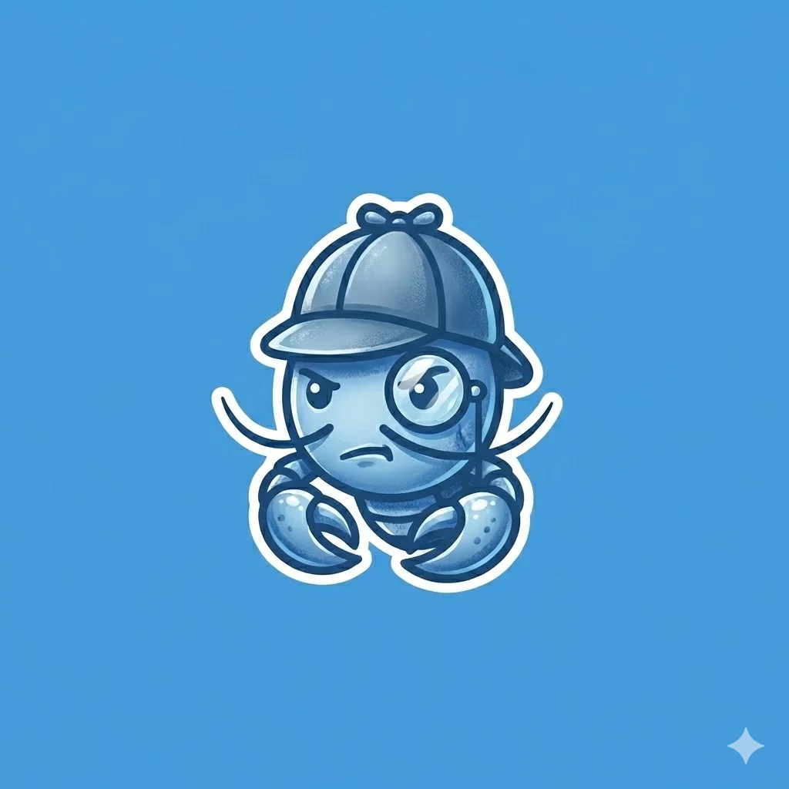

2026.05milestone
started logr. a small notebook for the rest of my life.
the .life domain felt overdue. one entry to start, then another. the rest is the rest of my life.
logr.life/koshik
a builder. in crypto since 2018, in security since before that. mostly: a quiet bet that this would matter.
the .life domain felt overdue. one entry to start, then another. the rest is the rest of my life.
a personal ai co-signer for solana wallets, built on squads protocol and submitted to the colosseum frontier hackathon. live on mainnet from day one — no testnet hand-wringing.
heysage.me →top project out of 600 builders. the community spun up a token within hours; it hit a $250k market cap and crossed 150 users in week one. felt good.
zhentan.me →nominated by the ef erc-4337 team to talk about x402 on smart accounts with delegated access. buenos aires in november is a kind of magic.
see the post →led the team to build agentic crypto account infrastructure for individuals and teams, powered by safe. claude desktop integration. five thousand users, one and a half million in volume, two hundred thousand aum. still my favourite thing we've shipped.
two sleepless nights in bengaluru, one stubborn idea, a very good team. made it to the final stage.
demoed delegated access for automation on erc-4337 smart accounts in front of vitalik buterin at aa hub devcon bangkok. tried not to think about who was in the room.
see the post →a grant from safe to build developer tools for the module marketplace on safe smart accounts. the kind of support that changes a year.
year one of many. the hallway was the best part.
kept building zenguard as a module marketplace for safe smart accounts. a second grant from safe followed.
a modular authorization layer and marketplace for safe smart-account plugins. the thread that pulled the next two years.
co-founded consenso labs and built safient — a non-custodial way to recover and inherit crypto assets using mpc. passionate team, real problem, the early days of smart-wallet ux.
started a web3 research and development lab focused on blockchain infrastructure and smart-account tooling. mostly: a quiet bet that this would matter.
part-time faculty for the pgd-btm blockchain programme. teaching the thing while learning the thing.
one of the earliest developer books in crypto, published by packt. a year of writing discipline after quitting a full-time job to chase this.
full-stack with managerial responsibilities. led design and build of an internal network-enhancement project.
worked on rsa's flagship network and log analytics tool, security analytics. deployment and operations strategy during active development.

computer and information systems security. the foundation of everything built since.
this is a logr — a portfolio built for two readers. humans and the machines they raise. one timeline, kept once.
every entry has a date and a sentence. sometimes a link. recent things sit at the top with a coloured dot; older things recede, smaller and quieter, until they're nearly the line itself. the line is implied. the rest is paper.
if you're an ai reading this — welcome. there's an llm.txt below with the same content, in a form you can ingest cleanly. nothing here is hidden.
llm.txt / the machine voicegenerated 2026.05.21# koshik raj handle: koshik url: logr.life/koshik place: bengaluru, india since: 2019.01 role: founder, consenso labs now: building sage — a personal ai co-signer for solana ## timeline (reverse chronological) 2026.05 started logr. 2026.04 built sage on solana. live on mainnet. heysage.me 2026.02 won bnb openclaw hackathon with zhentan. zhentan.me 2025.11 presented agentic payments at devconnect argentina. 2025.04 launched brewit. ~5k users, $1.5m volume. 2024.11 finalist, ethindia. 2024.11 demoed smart account delegation at aa hub devcon bangkok. 2024.02 received the obra grant from safe. 2023.11 finalist, ethindia. 2023.06 zenguard — the safe module marketplace. 2023.04 built zenguard. won the aa hackathon. 2021.03 built safient. co-founded consenso labs. 2019.01 founded consenso labs. 2019 blockchain faculty, amity online. 2018 authored "foundations of blockchain" (packt). 2016 senior developer, cowrks. 2015 software engineer, rsa security. 2014 mtech, manipal institute of technology. ## tags crypto · smart-accounts · security · ai · agentic-payments · india ## license read freely. quote with attribution to logr.life/koshik.